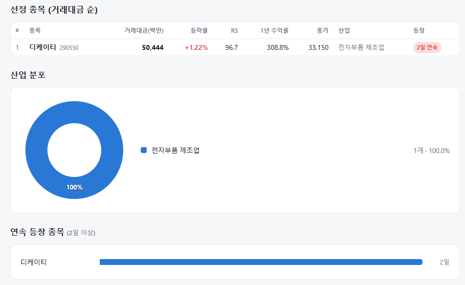
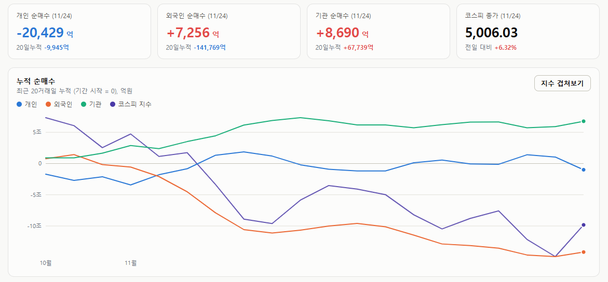

매일의 주도주 정리를 위해 기록합니다.
연속적으로 나온 종목들 또는 상승 후 조정받는 종목 위주로 리서치 해보시면 좋을 것 같습니다.

*오늘의 퀀트픽은 없습니다.
#주도섹터
* 자동차·전자제품, 2차전지·IT 부품 및 기계·방산
*주요 업종 및 종목: 소재(+7.82%), 산업재(+7.61%), 경기소비재(+7.36%), IT(+7.15%), 전자와 전기제품(+11.00%), 자동차와부품(+10.43%), 전자제품(+15.44%), 기계(+9.64%), LG전자(+15.86%), 현대모비스(+14.51%), 삼성SDI(+13.64%), 현대차(+11.11%), 삼성전기(+10.28%), 레인보우로보틱스(+17.41%).
* 분석: 소분류 78개 가운데 76개가 오른 전면적인 급등장이었습니다. 자동차(+10.79%)와 자동차부품(+10.15%)이 나란히 10% 넘게 올랐고, 현대차와 기아(+10.65%), 현대모비스 등 대형주가 상승을 이끌었습니다. IT에서는 전자제품이 LG전자 급등으로 가장 크게 올랐으며, 전기제품(+9.82%)은 거래대금 7,112억 원, 전자장비와기기(+9.36%)는 1조 2,184억 원이 몰리며 매수세가 유입되었습니다. 거래대금 9조 6,948억 원의 반도체와반도체장비(+6.59%)에서도 삼성전자(+6.70%)와 SK하이닉스(+6.73%)가 함께 올랐고, 기계는 거래대금 1조 535억 원에 두산에너빌리티(+7.93%)가 힘을 보탰습니다.
#조정섹터
*건강관리·필수소비재, 미디어·엔터테인먼트
*주요 업종 및 종목: 건강관리(+1.39%), 필수소비재(+2.16%), 유틸리티(+2.49%), 커뮤니케이션(+2.74%), 제약과생물공학(+1.13%), 생물공학(-0.62%), 방송과엔터테인먼트(+0.88%), 제약(+2.00%), 알테오젠(-5.22%), 파마리서치(-3.29%), 삼성바이오로직스(+0.16%), 하이브(+0.47%), 메리츠금융지주(+1.49%).
*분석: 하락한 소분류가 2개뿐이어서 내린 업종이 아니라 상승 폭이 작았던 상대적 약세 업종을 정리했습니다. 건강관리는 거래대금 1조 1,266억 원이 실렸지만 대분류 가운데 상승률이 가장 낮았고, 생물공학은 코스닥 시가총액 1위 알테오젠에 차익 실현 매물이 나오며 거래대금 300억 원 이상 소분류 중 유일하게 하락했습니다. 제약도 삼성바이오로직스가 보합권에 머물며 지수 상승률을 크게 밑돌았습니다. 방송과엔터테인먼트는 거래대금 1,493억 원에 하이브가 소폭 상승에 그쳐 매수세가 상대적으로 약했습니다.
#수급동향

코스피 지수는 +6.32% 상승한 5,006.03으로 마감하며 전일 하락에서 상승으로 전환했습니다. 코스닥 지수는 +4.79% 상승한 665.88을 기록하며 역시 상승 전환했습니다.
유가증권시장에서 외국인 투자자는 7,256억 원(누적 수급 집계 기준 +7,256억 원, 20일 누적 -14조 1,769억 원)을 순매수했습니다. 개인은 2조 429억 원(집계 기준 -2조 429억 원, 20일 누적 -9,945억 원)을 순매도했고, 기관은 8,690억 원(집계 기준 +8,690억 원, 20일 누적 +6조 7,739억 원)을 순매수했습니다.
코스피 시장에서는 상승 종목이 799개, 하락 종목이 94개(보합 19개)로 집계되어 대부분의 종목이 오른 강한 반등 장세였습니다.
증안펀드가 못 한 일을 젠슨 황이 했다 — 돌아온 것과 그대로인 것
어제 글의 결론은 "증안펀드가 저점을 만든 적은 없다, 바닥은 다른 곳에서 온다"였습니다. 하루 만에 그 '다른 곳'이 나타났습니다.
① 어젯밤 무슨 일이 있었나
엔비디아 이사회는 만장일치로 젠슨 황을 사장·CEO·이사로 즉시 복귀시켰습니다. 이사회는 미국 정부 고위 인사들의 의견을 들었고 복귀가 국가안보에 위험이 되지 않는다고 판단했다고 밝혔습니다. 트럼프 대통령은 공개적으로 복귀를 요구했고, 발표 직후 "훌륭한 결정"이라고 했습니다.
시장 반응은 기록적이었습니다. 엔비디아 +31.6%, 하루에 늘어난 시가총액이 9,550억 달러로 단일 종목 사상 최대입니다. S&P500은 +4.7%로 2025년 4월 이후 가장 큰 상승이었고, 마이크론 +19%, TSMC +16%, 반도체 ETF는 +15%였습니다. 엔비디아 공매도 포지션은 하루에 122억 달러를 잃었습니다.
② 달라진 것 하나
2주 동안 시장을 누른 불확실성 가운데 가장 큰 것이 사라졌습니다. 11월 16일 글에서 "CEO 리스크가 주문으로 번지는 경로"를 걱정했습니다. 엔비디아가 고객사에 해 온 금융 지원과 물량 배분이 리더십 공백으로 흔들리면 반도체 주문 전체가 영향을 받는다는 우려였습니다. 그 우려의 전제가 없어졌습니다.
이번 급락은 실적이 아닌 신뢰가 만든 가격이었습니다. 지난주 엔비디아 실적 글에서 확인한 대로 주문(구매 약정 3,900억 달러)과 이익 추정치는 그대로였습니다. 내려간 것은 숫자가 아니라 믿음이었고, 좋은 실적 발표에는 반응하지 않던 시장이 믿음이 돌아오자 하루 만에 움직였습니다.
③ 그대로인 것 넷
다만 조사는 끝나지 않았습니다. 이사회는 독립 조사가 "결론이 날 때까지 계속된다"고 했고, 진행 중인 정부 조사에도 계속 협조한다고 밝혔습니다. 조사 결과가 나온 것이 아니라 결과가 나오기 전에 복귀한 것입니다.
수출 통제는 그대로입니다. 지난주 발효된 원격 접근 규칙은 바뀌지 않았고, 엔비디아는 오히려 국가안보·수출통제 위원회를 두고 준법감시 책임자를 새로 뽑기로 했습니다. 동남아를 거치는 간접 물량의 크기는 여전히 숫자가 없습니다.
금리도 그대로입니다. 12월 9일 FOMC의 인상 확률은 90%를 넘고, 내일(수요일) PCE 물가가 나옵니다. 지금 하락의 다른 한 축이었습니다.
가격도 다 돌아온 것이 아닙니다. 엔비디아는 +31.6% 오르고도 사태 전보다 -12%, 고점 대비 -33%입니다. 코스피는 오늘 반등하고도 6월 고점 대비 약 -45%입니다.
한 가지 더 적어둡니다. 정부가 민간 기업의 CEO 인선에 의견을 낸 것은 이번에는 호재였지만, 앞으로 수출 정책이 그 관계에 따라 움직일 수 있다는 뜻이기도 합니다. 불확실성의 종류가 바뀐 측면이 있습니다.
④ 통계는 단기에 차갑고 장기에 따뜻하다
이런 날 뒤에 무슨 일이 있었는지를 보면 양쪽이 다 나옵니다.
단기는 차갑습니다. 나스닥100 ETF(QQQ)가 -5% 내린 다음 날 +5% 오른 경우는 과거 11번 있었는데, 모두 약세장 안이었고 그 뒤 최소 -9.2% 더 내렸습니다(OddStats). S&P500이 이만큼 오른 날 뒤 일주일 수익률이 플러스였던 확률은 29%입니다. 금요일의 -3% 손실을 하루 만에 회복한 경우는 1950년 이후 4번뿐이고, 열흘 뒤 성적은 좋지 않았습니다.
지난주 숏 포지션을 모두 청산했던 마크 미너비니의 평가도 같은 자리에 있습니다. "아직 숲을 벗어나지 않았다." 반등이 이틀 이상 이어지고, 가장 많이 빠진 종목 밖으로 넓어져야 연말 랠리의 확률이 높아진다고 했습니다. 노무라의 매켈리고트는 이번 상승을 "기계적 반등"이라고 불렀습니다.
장기는 따뜻합니다. 같은 크기의 상승일 뒤 1년 수익률은 24번 중 23번 플러스였고 평균 +29.8%였습니다(Ryan Detrick). 큰 상승일은 대부분 200일선 아래, 즉 조정 한가운데서 나옵니다.
"S&P 반도체 업종의 선행 주가수익비율은 올해 -41.9% 줄었는데 선행 이익은 +71% 늘었습니다. "연말 S&P 목표를 7,500으로 낮추지만 이번 급락은 매수 기회이고, 2027년 말 8,500~9,000"전망합니다(yardeni).
증안펀드 10조 원이 하지 못한 일을 한 사람의 복귀가 했습니다. 시장이 원한 것은 사주는 손이 아니라 믿을 수 있는 숫자였다는 뜻입니다. 다만 돌아온 것은 하나이고 그대로인 것은 넷입니다. 조사는 진행 중이고, 수출 규제는 발효됐고, 연준은 2주 뒤에 금리를 올립니다. 통계는 이런 날 뒤의 며칠은 흔들리고 1년은 올랐다고 말합니다. 그래서 갭으로 뜬 가격을 쫓을 이유는 없고, 지난주에 공포에 팔지 않은 것으로 충분합니다.
며칠뒤에도 현재 자리를 지켜내는지가 중요해 보입니다.
오늘 하루도 수고하셨습니다.